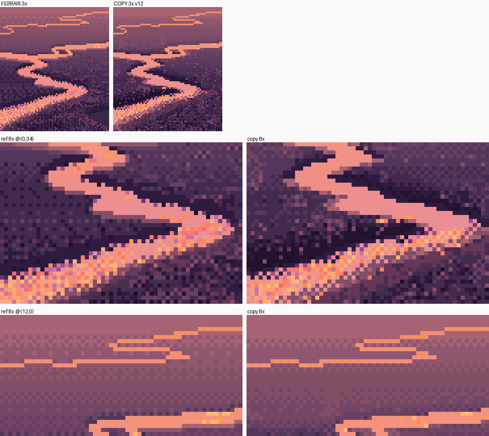

1. Read the water out of the master's own files
What it's for. Before you paint water in someone's language, find the passage of theirs nearest your subject and read it as data, pixel by pixel. For Ferrari that's possible because the index files of his Living Worlds colour-cycling scenes are public. This page shows how I read one river passage, what I found, and how I copied it until a blind critic couldn't tell it from his at 8×. Every later page stands on what I found here.
Code: code/c0a_v02.py (the copy), code/pixkit.py (lw_load, compare_sheet, edge_profile, luma). These are snapshots of my study's src/.

Top: his V02 ribbons (left) and my copy (right) at 3×. Below: two 8× details, his left, mine right. This is v12, the version that passed.
Step 1. Look for the nearest passage in all his work, not just the one you were given
My brief pointed me at Mirror Pond and Mountain Stream, but neither has a braided river in it. I made a contact sheet of every Living Worlds scene I had (twelve files, fetched by the master-copy student as JSON from the Canvas Cycle demo) and looked at all of them.

nb020. Eight of the other scenes on one sheet. Top row, second from left: V02, "Mountain Fortress Dusk". Its lower left is a braided marsh at a low angle, thin ribbons of sunset sky winding through dark ground. It was nowhere in my brief.
V02's lower left is my subject painted by him. V11AM (the monoliths, morning) has a river with a riffle, which is my stage 3. Those two became copies A and B.

His ribbons at 5×. The far threads are one pixel tall; the near ribbon is glitter.
Step 2. Load the indices, not the RGB
The JSON isn't strict JSON (bare keys, single quotes). The master-copy student's loader fixes that with one regex, and I copied it:
def lw_load(name):
t = open(LW + name + '.json').read()
t = re.sub(r'([{,])\s*([A-Za-z_]+)\s*:', r'\1"\2":', t).replace("'", '"')
d = json.loads(t)
d['pal'] = np.array(d['colors'], dtype=np.uint8)
d['idx'] = np.array(d['pixels'], dtype=np.int32).reshape(d['height'], d['width'])
return d
d['cycles'] lists the colour-cycling ranges. In V02, indices 128–135, 160–167 and 232–239 cycle. That tells you exactly which pixels he made shimmer.
Step 3. Print the passage as text
The most useful thing I did in the whole study was print index maps with one character per index, and stare at them. First, which pixels are water at all:
W = set(list(range(1, 48)) + list(range(128, 136)) + list(range(160, 168)))
for y in range(276, 376):
print('%3d ' % y + ''.join('#' if v in W else ('b' if v in (73, 74, 75) else '.')
for v in idx[y, 0:140]))
288 bbbbbbbbbbbbbbbbbbbbbbbbbbbbbbbbbbbbbbbbb#########bbbbbbbbbbbbbbbbbbbbbbb
289 bbbbbbbbbbbbbbbbbbbbbbbbbbbbbbbbbbbbbbb##bbbbbbbbbbbbbbbbbbbbbbbbbbbbbbbb
290 bbbbbbbbbbbbbbbbbbbbbbbbbbbbbbbbbbbbbbbb##############bbbbbbbbbbbbbbbbbbb
...
317 ........bbbbbbbbbbbb#######.............................b.b.b.......b....
318 ................bbbbbb#######....................b.b.............b.b.b.b..
319 .......................########b..b.....b.......b.b.......................
Then the water with its sky-ramp step as a digit, and the land as letters, so you can see what sits next to what:
306 .........................................................444444ddd4dd4444dddc444____
307 ...........................................44444444444444444444444c4444444______
308 ....................................44444444444444444444444444dcddc444____
312 44444444............................545......454..........................
313 454545454545454545.......54545454545454545454545.._.......................
(4, 5 are sky indices 4 and 5; d, c are the hot oranges 43, 42; _ is his lightest marsh colour; . is darker marsh.)
Step 4. Read the rules off the text
Each of these came from the maps, then was checked with a count:
- The water is the sky ramp, and the step climbs with nearness. Indices 1–15 are his sky, from the hot horizon to violet at the zenith; the first eleven all lie within luma 155–174, a hue walk at nearly one value. The far threads use steps 2/3, the middle ribbons 4/5, then 6/7, and the near ribbon 7/8. Nearer water mirrors higher sky, so it takes a higher index. There are no water colours of its own in the open ribbons at all.
- Steps cross as sustained 50% checkers (
4545…for several rows), not narrow seams. - Low-angle shape is horizontal runs. A far thread is exactly one row tall, stepping a row at a time in runs of 5–15 px. Thickness in rows grows toward the viewer.
- The near edge is light and the far edge is dark. I measured it: the mean luma of land pixels by rows from the water, above it (the far bank) and below it (the near bank):
python
def edge_profile(lum, mask, y0=0, maxk=10):
...
for x in range(w):
col = mask[:, x]
for y in range(y0, h):
if col[y]:
continue
for k in range(1, maxk + 1):
if y + k < h and col[y + k]:
A[k].append(lum[y, x]); break # k rows ABOVE the water
for k in range(1, maxk + 1):
if y - k >= 0 and col[y - k]:
B[k].append(lum[y, x]); break # k rows BELOW the water
far bank (rows above water, 1..7): 61 60 65 69 74 75 76
near bank (rows below water, 1..7): 100 78 66 65 63 64 68
The far bank darkens over about three rows toward the water. The near bank has one bright row (his lightest marsh colour, 73), one medium row, then a slight trough. On a steep diagonal the far edge dissolves into a water/dark checker whose dark pixels cycle: the shimmer sits on the reflection's edge. 5. The far bank's dark band widens toward the viewer, because a bank face projects taller when nearer. 6. Hot glints are clusters of 1–4 px of bright orange on the middle ribbons, sparse and horizontal. 7. The near ribbon is glitter: a checker of cycled peach against static sky steps.
Step 5. Build a comparison sheet you'll use fifty times
pk.compare_sheet puts his crop and mine side by side at 3×, then two detail windows at 8×, and I print three numbers every run: blurLab (mean ΔE after a σ = 3 px blur, "at a squint"), run lengths both ways, and the IoU of the water masks.
pk.compare_sheet(ref, cp, 'study/c0a_%s.png' % tag, [(0, 34, 60, 40), (12, 0, 60, 30)], label=tag)
print(pk.metrics(cp, ref), 'water IoU %.2f' % ((rm & m).sum() / (rm | m).sum()))
print('ref edge profile', pk.edge_profile(pk.luma(ref_idx, pal), rm, 18))
print('copy edge profile', pk.edge_profile(pk.luma(cv, pal), m, 18))
Step 6. Paint by rules, in his indices
The copy paints in his palette indices, so every mistake is a wrong choice, never a wrong colour. The water fill is rule 1, literally: an interpolated sky step per row, banded, then ordered-dithered:
def water_fill(mask, rng, F=None):
...
v = np.interp(y, [283, 290, 296, 304, 309, 316, 320, 324, 329, 334, 340],
[2.3, 3.0, 3.5, 4.0, 4.5, 5.0, 5.5, 6.0, 6.5, 7.0, 7.6]) # the step climbs
v = v + (pk.value_noise(h, w, 8, rng, 1, aniso=(0.4, 2.0)) - 0.5) * 0.5
base = pk.ordered(pk.banded(v, 0.7))
... # hot glints: 1-4 px clusters of 42/43, 6% far, 1% mid
near = mask & (y >= 337) & (F < -KY * 0.9)
out = np.where(near & par, cyc, out) # glitter: cycled peach on the checker lattice
out = np.where(near & ~par, stat, out) # against static sky steps
The edges are rule 4, with the water's shape as a signed distance field F in a space where y is stretched ×4 (KY = 4: a ribbon going toward you is wide in x and thin in y), and gy telling which side of the ribbon a pixel is on:
lip = mid & (gy >= 0) & (F >= 0) & (F < KY) # land just BELOW water: the light lip
out[lip] = np.where(nearish, lipc, np.where(par, 74, 75))[lip]
dk = mid & (gy < 0) & (F >= 0) & (F < KY) # land just ABOVE water: the dark face
out[dk] = np.where(nearish, np.where(steep | (rng.random((h, w)) < 0.6), 80, 79), ...)[dk]
fr = (y > 334) & (gy < 0) & (F < 0) & (F > -KY) & steep & par
out[fr] = rng.choice([80, 233, 234, 237, 239], fr.sum()) # far edge on a diagonal: cycled dark checker
The marsh darkens above each ribbon by column distance to the water below (pk.col_dist), scaled so the dark band is taller nearer the viewer (rule 5).
Step 7. Trace his shapes, so the test is your procedure
My first versions drew the ribbons from a copyist's sketch: polylines with widths.

nb029, v1. blurLab 3.98. The far threads were already close. The near ribbon was a road.
The critic's round 1 caught a ruled 45° diagonal along the glitter band's lower edge and a ribbon of constant width like a road. Round 2 caught the fix I'd made for the first, a 45° band of checker dissolving the glitter, which read as a zip ("the same tell, new costume").

nb047, v10. I made the banks bite into the water in stepped notches (blocky noise held flat over 2–4 px runs). The road went away and the zipper arrived in the lower right.
Then the critic said the thing I pass on: in a master copy you're allowed to trace his shapes exactly. Otherwise you're testing your tracing, not your procedure. So traced_fields() takes his water mask from the index map, turns it into the same signed distance field, and everything else stays procedure:
def traced_fields():
"""the master-copy allowance: take his water SHAPE exactly (so the test is the procedure)."""
d = pk.lw_load('V02')
idx = d['idx'][Y0:Y0 + H, X0:X0 + W]
wset = list(range(1, 48)) + list(range(128, 136)) + list(range(160, 168)) + list(range(232, 240))
m = np.isin(idx, wset)
thread = m & (np.arange(H)[:, None] < 18)
body = m & ~thread
F = edt(~body, sampling=(KY, 1.0)) - edt(body, sampling=(KY, 1.0))
return F, thread
blurLab went from 3.87 to 1.84 and the water IoU from 0.61 to 0.96. I also cut the glitter's lower margin to sparse specks (7% of the pixels within 1.5 lips), with no dissolve band. The critic passed v12: "At 3× the two are hard to tell apart. At 8× the ribbon's bites, the glitter's upward fade into sparse specks, the near-edge light lip and the far-edge dark all read as his."
What was left: my left bank is a slightly more random, lighter mottle where he keeps a regular 4×4 lattice of darker dots.
Step 8. Take the rules forward, not the copy
The copy lives in his palette and his shapes. What I carried into my own painter was the list in step 4. Every how-to after this one starts from it:
- the water is the sky ramp, and the step comes from the reflected elevation (how-to 2);
- low-angle shape is horizontal runs, down to one-row threads (how-to 6);
- near edge light, far edge dark, and the dark widens toward you (how-to 4);
- only the reflection's edges and the marks shimmer.
A second copy, only partly matched. Copy B (V11AM, code/c0b_v11.py) taught me the riffle's grammar: his marks are bluer and darker than the mirror, laid by a density field, with chains of single pixels rising on the checker lattice. I stopped at "partly matched" (blurLab 6.14 → 4.10). The critic's parting advice, which I'd follow first next time, was to trace his riffle shapes exactly as I did for copy A. See how-to 7.

Copy B v7: his V11AM riffle (left), mine (right). My jets are too regular, and my rocks' maroon strips should be a horizontal face.